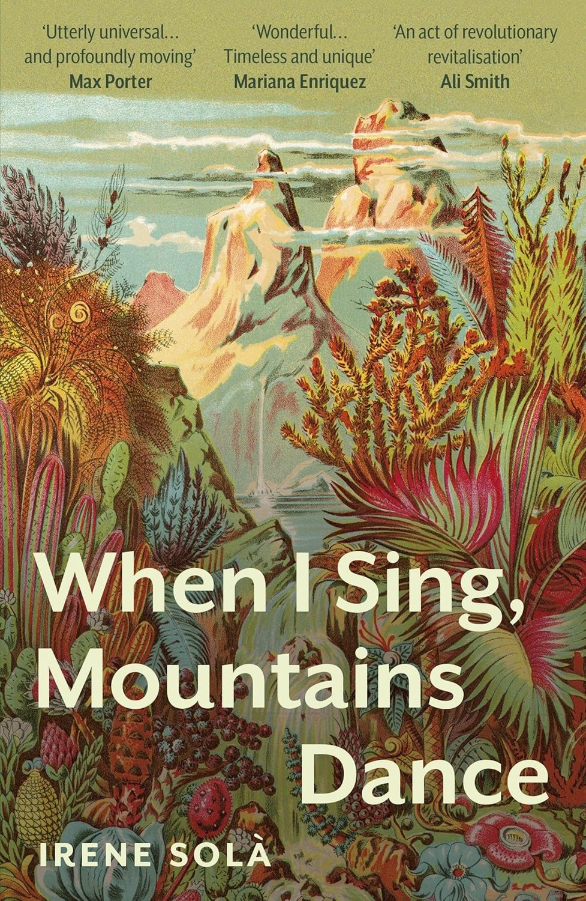
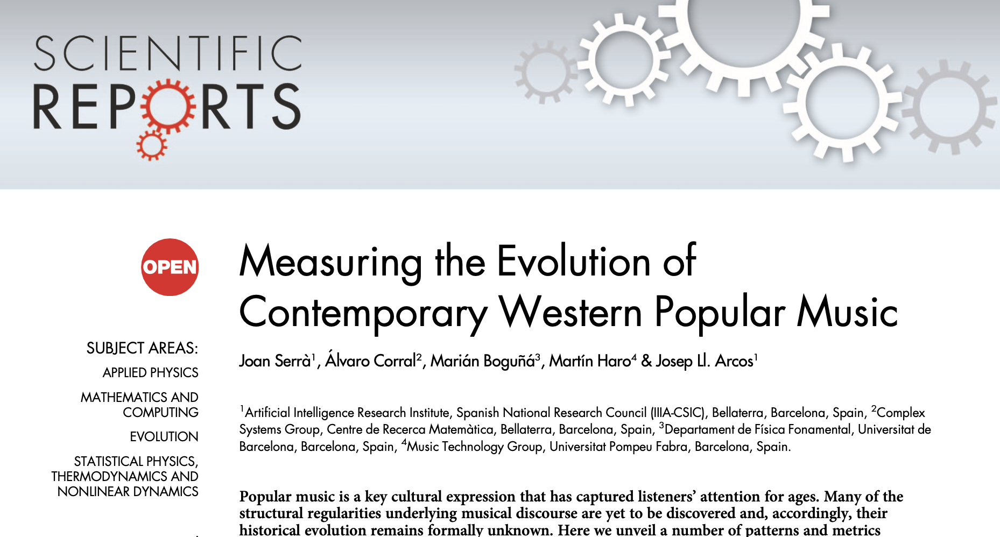
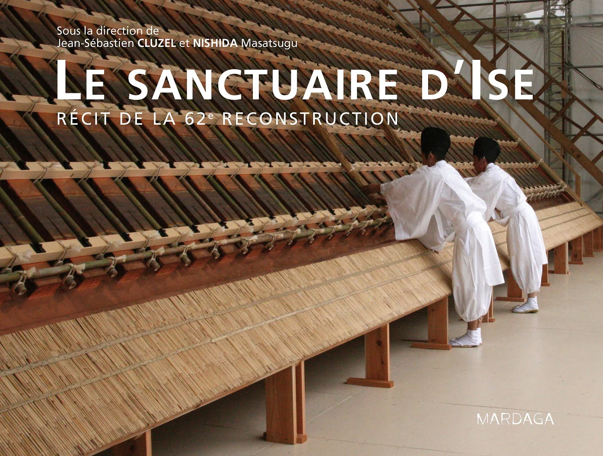
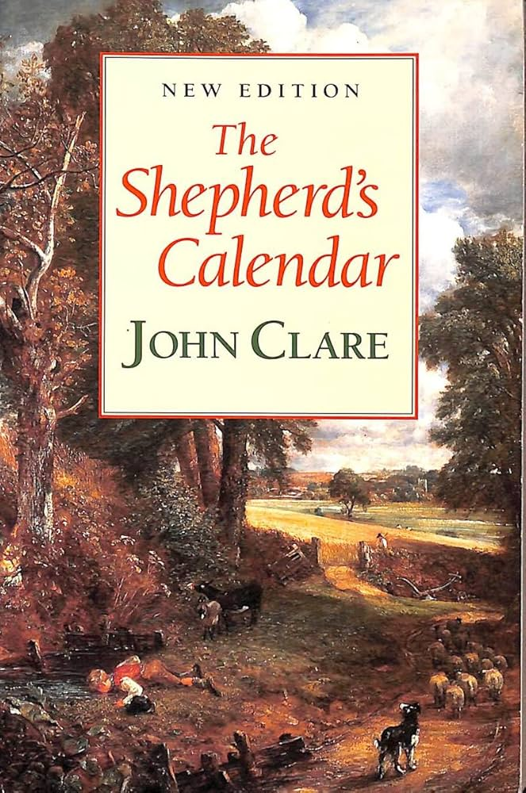
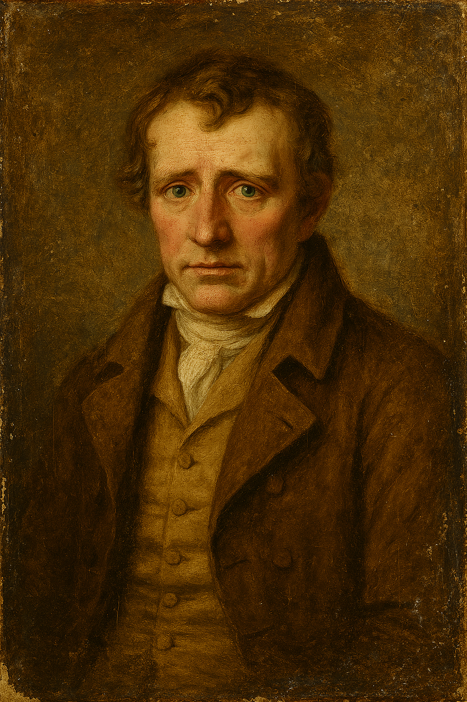
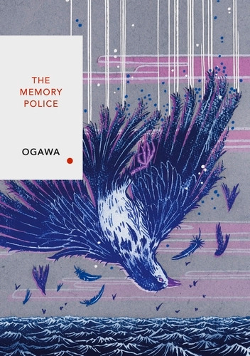
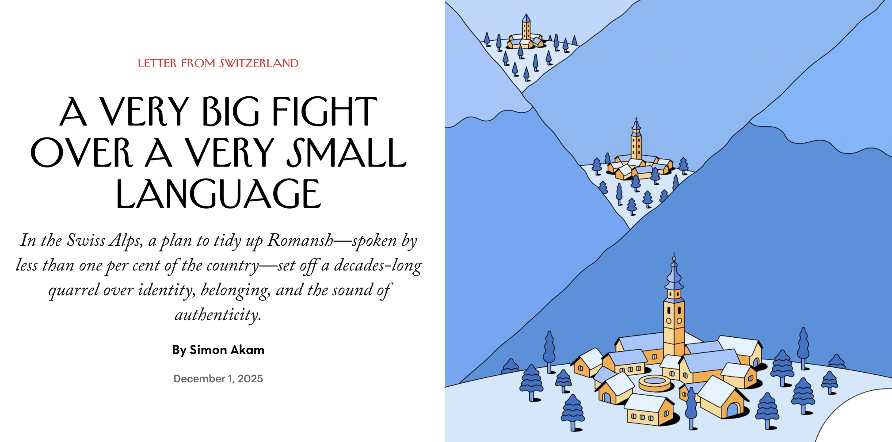

Daniel Puig - research profile
Profile
Education
| PhD in climate change governance (Technical University of Denmark, 2020) |
| MSc in biological sciences (Autonomous University of Barcelona, 1992) |
Career
| 2026 - present | University of Bergen (researcher, Bergen) |
| 2022 - 2026 | University of Bergen (postdoctoral fellow, Bergen) |
| 2011 - 2022 | Technical University of Denmark (senior advisor, Copenhagen) |
| 2001 - 2011 | United Nations Environment Programme (programme officer, Paris) |
| 1996 - 2001 | COWI Consulting Engineers and Planners (project manager, Kongens Lyngby) |
| 1992 - 1995 | Several research assistant positions, including at the University of Barcelona (Spain) and the Water and Environment Research Institute (Finland) |
Editorial responsibilities
| Associate Editor at Regional Environmental Change, where I mostly handle manuscripts focused on non-economic loss and damage and social limits to climate change adaptation. |
| Review Editor at Frontiers in Climate’s "Climate Risk Management", a journal indexed in Clarivate’s Web of Science and Elsevier’s Scopus databases. |
Selected trainings
| Course “Introduction to teaching and course design” (University of Bergen, 2025) |
| Summer School “Agent-based modelling” (University of Milan, 2024) |
| Course “PhD supervision” (Technical University of Denmark, 2021) |
Memberships
| Association of Critical Heritage Studies |
Research stays
| University of Tokyo (March-May 2025 — Tokyo, Japan) |
Languages
| Fluent: English, French and Spanish |
| Limited proficiency: Danish and Norwegian |
| Mother tongue: Catalan |
Publications
These are nearly all the documents I have authored or co-authored. Click on a section title to see the full list. For all documents available from public repositories, I provide a permanent link. For most of the rest, I provide a downloadable file. For some of the journal articles, I provide a postprint copy. To access a document, simply click on its title. For a small number of documents, I'm afraid the electronic versions are no longer available.
Peer-reviewed journal articles (in preparation)
- Toward a theory of social limits to adaptation in the context of climate change-induced relocation
- A research agenda for vulnerability in the context of non-economic loss and damage
Peer-reviewed journal articles (under review)
- Wang, T., Pan, X., Robiou du Pont, Y., Puig, D., Zhang, X., & Teng, F. (2026). Quantifying national responsibilities for climate change impacts. Nature Communications.
- Puig, D., Gallofré, M., Haarstad, H., & Neby, S. (2026). Ontologies of social limits to climate change adaptation. iScience.
Peer-reviewed journal articles (in press or published)
- Puig, D. (2025). Editorial overview: Social limits to climate change adaptation revisited. Current Opinion in Environmental Sustainability, 77(101591). https://doi.org/10.1016/j.cosust.2025.101591
- Puig, D. (2025). Social limits to adaptation in the context of intangible cultural heritage. Current Opinion in Environmental Sustainability, 77(101569). https://doi.org/10.1016/j.cosust.2025.101569
- Puig, D., Adger, N. W., Barnett, J., Vanhala, L., & Boyd, E. (2025). Improving the effectiveness of climate change adaptation measures. Climatic Change, 178(1), 1-15. https://doi.org/10.1007/s10584-024-03838-8
- Puig, D. (2025). Acting on climate change-driven incommensurable loss. Climate and Development, 1–10. https://doi.org/10.1080/17565529.2025.2462588
- Puig, D. (2025). Det vi holder kjært. Naturen, 149(1), 49-50. https://doi.org/10.18261/naturen.149.1.7 [Postprint]
- Puig, D. (2024). The Omiwatari religious ritual: an example of climate change-driven loss of intangible cultural heritage. Case Studies in the Environment, 8(1): 2323147. https://doi.org/10.1525/cse.2024.2323147 [Postprint]
- Puig, D. (2022). Loss and damage in the global stocktake. Climate Policy, 22(2), 175-183. https://doi.org/10.1080/14693062.2021.2023452
- Puig, D. (2022). Re-conceptualising climate change-driven 'loss and damage'. International Journal of Global Warming, 27(2), 202-212. https://doi.org/10.1504/IJGW.2022.123282 [Postprint]
- Puig, D., Moner-Girona, M., Szabó, S., & Pascua, I. P. (2021). Universal access to electricity: actions to avoid locking-in unsustainable technology choices. Environmental Research Letters, 16(12), 121003. https://doi.org/10.1088/1748-9326/ac3ceb
- Puig, D., Moner-Girona, M., Kammen, D. M., Mulugetta, Y., Marzouk, A., Jarrett, M., ... & Nakićenović, N. (2021). An action agenda for Africa's electricity sector. Science, 373(6555), 616-619. https://doi.org/10.1126/science.abh1975
- Puig, D., & Bakhtiari, F. (2021). Determinants of successful delivery by non-state actors: an exploratory study. International Environmental Agreements: Politics, Law and Economics, 21(1), 93-111. https://doi.org/10.1007/s10784-020-09482-8
- Szabó, S., Pinedo Pascua, I., Puig, D., Moner-Girona, M., Negre, M., Huld, T., ... & Kammen, D. (2021). Mapping of affordability levels for photovoltaic-based electricity generation in the solar belt of sub-Saharan Africa, East Asia and South Asia. Scientific Reports, 11(1), 1-14. https://doi.org/10.1038/s41598-021-82638-x
- Puig, D., & Bakhtiari, F. (2019). Incorporating uncertainty in national-level climate change-mitigation policy: possible elements for a research agenda. Journal of Environmental Studies and Sciences, 9, 86-89. https://doi.org/10.1007/s13412-018-0514-5 [Postprint]
- Moner‐Girona, M., Puig, D., Mulugetta, Y., Kougias, I., AbdulRahman, J., & Szabó, S. (2018). Next generation interactive tool as a backbone for universal access to electricity. Wiley Interdisciplinary Reviews: Energy and Environment, 7(6), e305. https://doi.org/10.1002/wene.305
- Puig, D., Haselip, J. A., & Bakhtiari, F. (2018). The mismatch between the in-country determinants of technology transfer, and the scope of technology transfer initiatives under the United Nations Framework Convention on Climate Change. International Environmental Agreements: Politics, Law and Economics, 18, 659-669. https://doi.org/10.1007/s10784-018-9405-1
- Puig, D., Farrell, T. C., & Moner‐Girona, M. (2018). A quantum leap in energy efficiency to put the sustainable development goals in closer reach. Global Policy, 9(3), 429-431. https://doi.org/10.1111/1758-5899.12574
- Puig, D., Morales-Nápoles, O., Bakhtiari, F., & Landa, G. (2018). The accountability imperative for quantifying the uncertainty of emission forecasts: evidence from Mexico. Climate Policy, 18(6), 742-751. https://doi.org/10.1080/14693062.2017.1373623
- Karavai, M., Lütken, S. E., & Puig, D. (2018). Could baseline establishment be counterproductive for emissions reduction? Insights from Vietnam’s building sector. Climate Policy, 18(4), 459-470. https://doi.org/10.1080/14693062.2017.1304350
- Haselip, J., Hansen, U. E., Puig, D., Trærup, S., & Dhar, S. (2015). Governance, enabling frameworks and policies for the transfer and diffusion of low carbon and climate adaptation technologies in developing countries. Climatic Change, 131(3), 363-370. https://doi.org/10.1007/s10584-015-1440-0
- de Coninck, H., & Puig, D. (2015). Assessing climate change mitigation technology interventions by international institutions. Climatic Change, 131(3), 417-433. https://doi.org/10.1007/s10584-015-1344-z
- Scrieciu, S. Ş., Belton, V., Chalabi, Z., Mechler, R., & Puig, D. (2014). Advancing methodological thinking and practice for development-compatible climate policy planning. Mitigation and Adaptation Strategies for Global Change, 19, 261-288. https://doi.org/10.1007/s11027-013-9538-z
Book chapters
- Calliari, E., Vanhala, L., Nordlander, L., Puig, D., Bakhtiari, F., Hossain, F., Rahman, F., & Huq, S. (2021). Loss and damage. In S. Reins and G. van Calster (Eds.) Commentary on the Paris Agreement (pp. 200-217). Cheltenham: Edward Elgar Publishing. ISBN: 978 1 78897 918 4 [Postprint]
Conference proceedings
Peer-reviewed scientific reports (main author or co-author)
- E. Boyd, A. Thomas, . . . D. Puig (2023). Loss and damage. In H. Neufeldt, L. Christiansen, T. Dale and L. Hemmingsen (Eds.), Adaptation Gap Report 2023 (pp. 61-74). United Nations Environment Programme. ISBN: 978-92-807-4092-9
- M. Riva, G. Hodes, M. Comstock, S. Huyer, V. Chao, F. Bakhtiari, D. Desgain, M. Hinostroza, D. Puig, K. Levin, D. Rich, E. Northrop, C. Elliott, A. Dinshaw and K. Mogelgaard (2020). Implementing Nationally Determined Contributions. Copenhagen: UNEP DTU Partnership. ISBN: 978-87-93458-73-4
- F. Bakhtiari, M. Hinostroza and D. Puig (2018). Institutional capacities for NDC implementation: a guidance document. Copenhagen: UNEP DTU Partnership. ISBN: 978-87-93458-25-3
- N. Höhne, P. Drost, F. Bakhtiari, S. Chan, A. Gardiner, T. Hale, A. Hsu, T. Kuramochi, D. Puig, M Roelfsema and S. Sterl (2016). Bridging the gap – the role of non-state action. In Olhoff, A. and Christensen, J. (Eds.) The emission gap report 2016: a UNEP synthesis report (pp. 23-30). Nairobi: United Nations Environment Programme. ISBN: 978-92-807-3617-5
- D. Puig and S.R. Aparcana-Robles (2016). Decision-support tools for climate change mitigation planning. Copenhagen: UNEP DTU Partnership. ISBN: 978-87 93458-03-1
- D. Puig and T.C. Farrell (2015). The multiple benefits of measures to improve energy efficiency: a summary report. Copenhagen: UNEP DTU Partnership. ISBN: 978-87-93130-26-5
- D. Puig (2015). Uncertainty in greenhouse-gas emission scenario projections: experiences from Mexico and South Africa. Copenhagen: UNEP DTU Partnership. ISBN: 978-87-93130-73-9
Peer-reviewed scientific reports (main editor or co-editor)
- D. Puig (Ed.) (2021). Climate technologies in an urban context. Copenhagen: Technical University of Denmark. ISBN: 978-87-94094-06-1
- D. Puig, A. Olhoff, S. Bee, B. Dickson and K. Alverson (Eds.) (2016). The adaptation finance gap report. Nairobi: United Nations Environment Programme. ISBN: 978-92-807-3498-0
- Olhoff and D. Puig (Eds.) (2014). The adaptation gap report: a preliminary assessment. Nairobi: United Nations Environment Programme. ISBN: 978-92-807-3428-7
- J. Alcamo, D. Puig, B. Metz and V. Demkine (Eds.) (2014). The emissions gap report 2014: a UNEP synthesis report. Nairobi: United Nations Environment Programme. ISBN: 978-92-807-3413-3
- J. Alcamo, D. Puig, B. Metz and V. Demkine (Eds.) (2013). The emissions gap report 2013: a UNEP overview report. Nairobi: United Nations Environment Programme.
- D. Puig and J. McIntosh (Eds.) (2011). Enhancing information for renewable energy technology deployment in Brazil, China and South Africa. Nairobi: United Nations Energy Programme.
-
D. Puig (Ed.) (2000). Economic instruments for environmental protection in Denmark. Copenhagen: Danish Environmental Protection Agency.
Technical and policy reports (only author or co-author)
- D. Puig (2026). The effects of climate change on intangible cultural heritage: between continuity and rupture — a working paper. Bergen: University of Bergen.
- D. Puig (2025). Using agent-based modelling to understand changes in appreciation of intangible cultural heritage – a working paper. Bergen: University of Bergen.
- D. Puig and X. Zhu (2023). Energy efficiency in green finance taxonomies. Copenhagen: UNEP Copenhagen Climate Centre.
- D. Puig, F. Bakhtiari and M. Söderberg (2022). Loss and damage at COP27. Bergen and Copenhagen: University of Bergen, UNEP Copenhagen Climate Centre and DanchurchAid.
- D. Puig and E. Roberts (2021). Loss and damage at COP26. Copenhagen: Technical University of Denmark.
- D. Puig (2021). How loss and damage might feature in the Paris Agreement’s Global Stocktake. Copenhagen: Technical University of Denmark.
- D. Puig (2021). Climate change-driven loss of cultural heritage in developed countries. Copenhagen: Technical University of Denmark. https://doi.org/10.11581/dtu:00000110
- D. Puig (2019). Climate change-induced loss and damage in small-island developing states in the Pacific: a scan of the scientific literature. Copenhagen: Technical University of Denmark.
- D. Puig, M. Wewerinke-Singh, and S. Huq (2019). Loss and damage at COP25. Copenhagen: Technical University of Denmark.
- D. Puig, E. Calliari, M.F. Hossain, F. Bakhtiari and S. Huq (2019). Loss and damage in the Paris Agreement’s transparency framework. Copenhagen, London and Dhaka: Technical University of Denmark, University College London and Independent University of Bangladesh.
- D. Puig, O. Serdeczny and S. Huq (2018). Loss and damage at COP24. Copenhagen: Technical University of Denmark.
- D. Puig and F. Bakhtiari (2017). The impact of debiasing on uncertainty communication: an application to multi-criteria decision analysis in the area of climate change. Copenhagen: UNEP DTU Partnership.
- D. Puig, P. Naswa and J.A. Haselip (2015). Adaptación al cambio climático en el sector hidroeléctrico nicaragüense. (Adaptation to climate change in Nicaragua’s hydropower sector). Copenhagen: UNEP DTU Partnership.
- D. Puig, P. Naswa and J.A. Haselip (2015). Adaptation to climate change in Colombia's oil and gas industry. Copenhagen: UNEP DTU Partnership.
- Olhoff, S. Bee and D. Puig (2015). The adaptation finance gap update – with insights from the INDCs. Copenhagen and Nairobi: UNEP DTU Partnership and United Nations Environment Programme.
- J.K. Søbygaard, D. Puig, S.R. Holm, A. Prag, U.B. Bendtsen, and P. Larsen (2013). National greenhouse gas emissions baseline scenarios. Copenhagen and Paris: UNEP DTU Partnership, Danish Energy Agency, and Organisation for Economic Co-operation and Development.
- D. Puig and T. Morgan (2013). Assessing the effectiveness of policies to support renewable energy. Nairobi: United Nations Environment Programme.
- T. Morgan, Ş. Scrieciu and D. Puig: (2011). MCA4climate - a practical framework for pro-development climate policy. Nairobi: United Nations Environment Programme.
- A. Deeb, A. French, J. Heiss, J. Jabbour, D. LaRochelle, A. Levintanus, A. Kontorov, R. Markku, G. Sánchez Martínez, R. McKeown, N. Paus, A. Pecoud, G. Pénisson, D. Puig, V. Retana, Ş. Scrieciu, M. Strecker, V. Vachatimanont, B. Witte and N. Yamada (2011). Climate change starter’s guidebook: an issues guide for education planners and practitioners. Nairobi: United Nations Environment Programme.
- R. Perez, C. Hoyer-Klick, D. Renné, M. Moner-Girona, D. Puig and J. McIntosh (2011). Development of a benchmarking tool for solar energy resource datasets. A guide for non-expert users to determine the most appropriate use of solar energy resource information -- Supporting Documentation. Freiburg im Breisgau: International Solar Energy Society.
- D. Puig and T. Malyshev (2007). Analysing our energy future: pointers for policy makers. Paris: United Nations Environment Programme and International Energy Agency.
- UNEP (2007). Global Environment Outlook 4. Nairobi: United Nations Environment Programme. [Contributions to the ‘Regional perspectives’ chapter]
- UNEP (2007). Global Environment Outlook Yearbook 2007. Nairobi: United Nations Environment Programme. [Contributions to the ‘Europe’ chapter]
- UNEP (2006). Global Environment Outlook Yearbook 2006. Nairobi: United Nations Environment Programme. [Contributions to the ‘Europe’ and ‘Energy and air pollution’ chapters]
- UNEP (2005). Global Environment Outlook Yearbook 2005. Nairobi: United Nations Environment Programme. [Contributions to the ‘Global’, ‘Europe’, ‘North America’ and ‘Abrupt climate change’ chapters, and to the ‘Atmosphere’ and ‘Global environmental issues’ indicator annexes]
- UNEP (2003). Global Environment Outlook Yearbook 2003. Nairobi: United Nations Environment Programme. [Contributions to the ‘Global’, ‘Europe’ and ‘North America’ chapters, and to the ‘Atmosphere’ and ‘Global environmental issues’ indicator annexes]
- UNEP (2002). Global Environment Outlook 3. Nairobi: United Nations Environment Programme. [(Contributions to the ‘Outlook: 2002-32’ chapter]
-
NCM (2001). Affecting energy efficiency: lessons learned and future prospects (TemaNord; No. 2001:548). Copenhagen: Nordic Council of Ministers. [Author of the ‘Denmark’ chapter and co-author of the ‘Introduction’ and ‘Conclusions’ chapters]
-
D. Puig (2001). Contribution to the European Environment Agency’s ‘Global assessment’ of the Fifth Environmental Action Programme. Copenhagen: COWI A/S.
-
COWI (2000). Review of the OECD’s draft strategy on sustainable development – a report to the Danish Environmental Protection Agency. Copenhagen: COWI A/S. [Co-author of all chapters].
- EEA (2000). Environmental signals 2000. Copenhagen: European Environment Agency. [Co-author of the ‘Transport’ and ‘Industry’ chapters]
- EEA (2000). Transport and environment in the European Union – Are we moving in the right direction? Copenhagen: European Environment Agency. [Co-author of the report]
- EEA (1999). Environment in the European Union at the turn of the century. Copenhagen: European Environment Agency. [Co-author of the ‘Urban areas’ chapter]
- DEPA (1999). Transport, environment and health in Central and Eastern Europe: state of affairs and policy options. Copenhagen: Danish Environmental Protection Agency. [Author of the ‘Assessment frameworks’ and ‘Air pollution’ chapters]
-
P. Mellen, D. Puig and T.R. Poulsen (1997). Pollution from industries not covered by the IPPC Directive. Copenhagen: COWI A/S.
-
P. Mellen and D. Puig (1996). Study on voluntary agreements concluded between industry and public authorities in the field of the environment. Copenhagen: COWI A/S.
Institutional strategies (selection)
-
D. Puig and F.B. Gutiérrez Figueroa (2020): Institutional capacities for climate change management. Copenhagen: UNEP DTU Partnership.
- J. Christensen, M. Radka and D. Puig (2010): Climate change strategy. Nairobi: United Nations Environment Programme.
-
UNEP (2003): Technology transfer. Nairobi: United Nations Environment Programme. [Contributor to all sections]
Teaching
I teach a master’s course at the University of Bergen and deliver individual sessions in several other courses. In addition, I am a regular guest lecturer at the University of Copenhagen.
GEO324: Human Geographies of Adaptation to Climate Change
I am responsible for this master's course, which covers nine key topics in climate change adaptation. For each topic, a generalist introduction is followed by an exploration of key issues through a human geography perspective.
GEO306: Methods in Human Geography
I teach the session on "sampling strategies and surveys" in this master's course.
GEO310: Writing and Project Description
I teach the session on "literature reviews and argumentative writing" in this post-graduate course.
GEO283: Geographies of Transformation: Mitigating and Adapting to Rapid Climate Change
I teach the sessions on "adaptation to climate change impacts" and "climate change-induced loss and damage" in this bachelor's course.
Events
These are conferences and other events I may be attending. I am not involved in organising any of them.
National Research Conference on Climate Change Adaptation
- Place: Quality Hotel Sogndal, Sogndal (Norway)
- Date: 21-22. September 2026
- Website: www.klimaomstilling.no
- Note: submit your abstract by 15 April through this online form.
Biennial Conference of the Association of Critical Heritage Studies
- Place: Victoria University, Wellington (Aotearoa, New Zealand)
- Date: 29 November - 2 December 2026
- Website: www.achs2026.nz
- Note: the theme 'Heritage connecting people and the environment' focuses on climate change.
European Climate Change Adaptation Conference
- Place: Oslo, Norway
- Date: likely in June 2027
- Website: www.ecca2027.eu
Adaptation Futures
- Place: Cancun Centre, Cancun (Mexico)
- Date: October 2027
- Website: www.wasp-adaptation.org
Infrequently asked questions
Monthly reflections on intangible cultural heritage, inspired by media, research and fiction I've encountered. These reflections may or may not have a direct connection to climate change impacts — but they will always have at least an indirect one.

JUNE 2026
When I Sing, Mountains Dance
A novel by Irene Solà, first published in English in 2022.
On a remote mountainside, a man is struck dead by lightning. The shock of that strike ripples far beyond his life and grieving family, unsettling the land around them as if the mountain itself has taken notice. What begins as a sudden tragedy quickly expands into something larger, as one death becomes part of a wider, shared story. From that point on, the valley opens up into a chorus of voices. Women, children, and neighbours step forward to speak, each carrying their own memories and silences. Alongside them come unexpected narrators—animals, ghosts, storms, witches, and even mushrooms—each offering a different angle on the same landscape. No single voice is in control; instead, the story builds through accumulation, as if truth can only be approached by listening to everything at once. As these voices gather, they reveal a deep connection to place and past that belongs as much to the people as to the land. The mountains hold traces of earlier generations, preserving their fears, their desires, and their ways of living. Old legends surface alongside everyday memories, making it difficult to separate what really happened from what has been told and retold over time. In this way, tradition appears not as a fixed record, but as something alive, shaped continuously by memory and imagination. Time in this world does not move forward in a straight line but folds back on itself. Scenes from different years and even different centuries appear side by side, allowing the past to intrude on the present without warning. A life is never fully contained within its own moment, because it carries echoes of what came before and leaves marks that will be felt long after it ends. The result is an account that mirrors the living nature of intangible cultural heritage. Ultimately, the many voices come together to suggest that nothing exists in isolation. People, animals, and landscapes are bound to one another through shared experience and inherited memory. By allowing every part of this world to speak, the novel transforms belonging into something vivid and dynamic: not a static inheritance, but a living network of stories that connects the past to the present and carries it forward. At a time when communities are allowing embodied connections to land and past to fade, what does it mean to treat intangible heritage as a more-than-human assemblage? Just as governments are being taken to court for failing to act on climate change, might future litigation arise from failures to enable the conditions that allow intangible heritage to thrive?
MAY 2026
"Measuring the Evolution of Contemporary Western Popular Music"
An article published in Scientific Reports on 26 July 2012

Research on homogenisation in popular music first focused on how market concentration and commercial control shape musical diversity. A seminal study from the 1970s used chart data to argue that increasing concentration in profit‑driven recording industries reduces musical diversity. Subsequent, large-scale empirical studies have built on this foundation to test the extent to which profit-driven mechanisms such as imitation of successful styles and hit‑driven production strategies shape patterns of musical similarity and consumption. From the 2010s onward, advances in data availability enabled researchers to analyse millions of tracks and user behaviours, identifying patterns of standardisation in audio features, lyrical content, and listening practices, often linked to platform‑based monetisation systems. Among the most influential recent studies is Measuring the Evolution of Contemporary Western Popular Music, which analysed more than 450,000 recordings from 1955 to 2010. It found that while the broad statistical patterns underpinning popular music—such as pitch, timbre and loudness—have remained strikingly stable over time, other trends point towards increasing standardisation. For example, pitch sequences have become more constrained and less varied, the range of timbres has narrowed around a set of dominant “sonic palettes”, and recordings have grown steadily louder, potentially reducing dynamic subtlety. Taken together, these observations suggest that, despite a surface impression of constant reinvention, contemporary popular music is increasingly shaped by the commercial priorities of a relatively small group of powerful industry players, rather than by artistic experimentation or connection to local musical traditions. It would be tempting, in light of these findings, to call for stronger regulation of the popular music industry as a way to counter homogenising pressures and to preserve connections to locally grounded musical forms. Yet such a response would address only part of the issue. Beneath the dynamics of market concentration lies a more fundamental challenge: limited familiarity with, and thus weakened engagement with, locally rooted musical expressions. This raises a broader question about how much communities value their cultural heritage in practice, and highlights the need for renewed efforts—by both public institutions and private actors—to cultivate awareness, education, and dialogue around the cultural heritage that enables communities to sustain a continuum from the past into the future. Where do we draw the line between protection of the public good and social engineering? Are we moving toward a future where culture and art become detached—or, more troublingly, one in which they can exist only insofar as they are profitable?

APRIL 2026
Le Sanctuaire d’Ise - récit de la 62e reconstruction [The Ise Shrine - a chronicle of the 62nd reconstruction]
An academic book edited by Jean Sébastien Cluzel and Nishida Masatsugu Mardaga, 2015.
Ise Jingū is a Shinto shrine complex located in Japan’s Mie Prefecture. Although Shinto has no centralised doctrinal authority—and therefore no shrine hierarchy—the Ise Jingū shrine complex is, in every practical, historical and ritual sense, Shinto’s spiritual capital. In a cycle that began around 689–690 CE and has seen few interruptions [1], sixteen of the one hundred and twenty-five structures in the shrine complex are rebuilt every twenty years [2]. Through a ritualised rebuilding process known as shikinen sengū (式年遷宮), ancient codified architectural standards are applied using traditional techniques to reproduce the structures’ archetypal forms. The purpose of rebuilding these structures every twenty years is to foster continuity, transmit embodied knowledge, reinforce social cohesion and materialise a worldview in which impermanence and renewal are sacred. The Izumo Taisha shrine, located in Japan's Shimane Prefecture, used to undergo a similar rebuilding process, though on a 60-year cycle. However, this cycle was interrupted multiple times, especially during periods of political and financial instability—and from the early modern period onward, the strict 60-year cycle fell out of consistent observance. It can therefore be argued that the frequently asserted idea that heritage is in constant evolution does not necessarily hold: here, the societal purpose heritage invariably serves is fulfilled precisely through the maintenance of limited—or even no—change. Against this background, Kishiro Iida’s contribution to this edited volume is especially interesting. It reveals that, contrary to the commonly held belief, traditional techniques are not reproduced exactly as before [3]. It follows that neither the preservation of material structures (the built heritage) nor the strict maintenance of ancient codified architectural standards (the intangible heritage) is indispensable for fulfilling the societal role served by the cyclical reconstruction process. Instead, shikinen sengū (式年遷宮), itself rooted in the Shinto concept of tokowaka (常若), or perpetual renewal as a path to eternal youth and spiritual vitality, constitutes the single continuous thread in a ritual now spanning more than thirteen centuries. Put simply, in the case of shikinen sengū (式年遷宮), as well as in other Shinto rituals—notably the o-miwatari (御神渡) ritual, held annually on the shores of Lake Suwa, in Japan’s Nagano Prefecture—material heritage and some aspects of intangible heritage both play a secondary role, relative to the spiritual component of the cultural manifestation concerned. In the context of religious traditions, how are material and intangible dimensions differentially foregrounded within heritage practices, and what does this reveal about how continuity and meaning are enacted? More generally, are relationships between built and intangible heritage mutually reinforcing, asymmetrical, or allow one largely to persist independently of the other? [1] During the Warring States period (1463–1485) and again during the Allied Occupation after the Second World War (1949–1953). [2] These are: Naikū, the main inner shrine; Gekū, the main outer shrine; ten auxiliary shrines dedicated to the Sun Goddess; and four auxiliary shrines dedicated to the Food Goddess. [3] The reconstruction office refines these techniques to improve durability while still seeking to preserve 'tradition'. New techniques are tested on samples and auxiliary shrines, and are adopted more wildly only once they have been approved by the Ise High Priest.
MARCH 2026
The Shepherd's Calendar
A calendar‑structured pastoral poem by John Clare, first published in 1827


John Clare (1793–1864) was a Romantic‑era English poet. Despite having limited formal education—he was born into poverty in Northamptonshire—Clare developed an extraordinary observational precision that allowed him to capture landscapes, wildlife, and the rhythms of agricultural communities with uncommon authenticity. His early success with Poems Descriptive of Rural Life and Scenery brought him brief fame. However, the growing loss of local dialects, traditional festivities, and rural crafts—brought about chiefly by enclosure and rural depopulation—caused him profound distress and contributed to his declining mental health, leading to his eventual confinement in asylums. Through works such as The Shepherd’s Calendar, John Clare was among the first of many writers to register profound transformations in England’s rural lifeways as depopulation reshaped the countryside. Thereafter, authors across the Romantic, Victorian, and Modernist periods engaged with changing practices of speech, labour, ritual, and seasonal life in distinct historical registers. For Romantic poets such as Clare, these changes were experienced as an imminent rupture, giving rise to urgent acts of poetic attention to dialect, custom, and local knowledge. By the Victorian period, writers including Thomas Hardy, William Barnes, and Elizabeth Gaskell reflected on rural practices as increasingly fragile or displaced within an industrialising social order. For Modernist figures such as D. H. Lawrence, Vita Sackville‑West, Edward Thomas, and Flora Thompson, rural worlds were often re‑encountered through memory, nostalgia, or elegy, rather than direct participation. Taken together, these literary engagements do not simply chart cultural change; they reveal shifting ways of valuing, negotiating, and re‑imagining rural practices over more than a century. Given that the insights found in these literary works are not empirical evidence and describe conditions rooted in a distant historical past, to what extent can they nonetheless help us understand the contemporary processes through which intangible cultural heritage is being reshaped? Since these writers primarily documented intangible cultural heritage amid processes of rural depopulation and urbanisation, which—if any—aspects of their insights are relevant for understanding the ways in which climate change is reshaping intangible cultural heritage today?


FEBRUARY 2026
The Memory Police
A novel by Yōko Ogawa, first published in English in 2019.
On an unnamed island, everyday objects begin to vanish one by one, without warning. The disappearance of each seemingly trivial object—such as hats, ribbons, calendars, perfume and roses—triggers a ritualised erasure: people burn or dispose of remnants, as though compelled by an invisible decree, and quickly forget both the items and their names. The Memory Police—the agents of disappearance—ensure every trace of vanished objects is eliminated, policing both physical presence and collective memory. Yet some characters resist forgetting. They cling to the lost items because of the weight of memory and meaning they carry: a ribbon might recall a birthday celebration, a rose a gesture of love, a calendar the rhythm of seasons and the promise of future plans. For those who remember, these objects are not mere possessions but anchors to identity and intimacy. Preserving them becomes an act of quiet defiance against a system that seeks to erase not only things but also the emotions and stories woven into them. Can cultures—especially non-dominant ones—continue to negotiate cultural change and transformation, as all cultures have done through history,under conditions where processes of change are being intensified and unevenly governed? Are contemporary processes of cultural transformation increasingly characterised by experiences of loss, or by forms of adaptation and regeneration? Related read: The Housekeeper and the Professor, by the same author, also reflects on memory. Through the elegance of Euler’s identity—a feat only an exceptionally skilled writer could achieve—Ogawa shows how trust and selfless love can create harmony among lives that seem worlds apart. The novel suggests that ‘things’ with mainly incommensurable value can endure quietly in the background, shaping lives even when—because, in this case, memory falters—they linger only as faint traces.
JANUARY 2026
“A very big fight over a very small language”
An article published in The New Yorker on 1 December 2025.

A decades-long controversy surrounds efforts to standardise Romansh, one of four Swiss national languages, spoken by fewer than one per cent of the population—some 50,000 people, split among five main dialects. Standardisation involved creating a unified written form called Rumantsch Grischun, which combined elements from the main Romansh dialects. This process included developing a common grammar, a shared orthography, and a harmonised vocabulary, with the ultimate goal of making the language easier to teach, publish, and use officially, thereby helping to preserve Romansh for future generations. However, many Romansh speakers, especially local communities in the canton of Graubünden, as well as teachers, writers, cultural associations, municipalities, and schools resisted standardisation because they felt it threatened their regional identity and cultural heritage, which is closely tied to local dialects. Many saw Rumantsch Grischun as artificial and feared it would erode the authenticity and richness of traditional speech communities. In a similar way to the Romansh case, UNESCO-led language-preservation efforts often generate resistance. There is considerable evidence that such resistance arises because these efforts rely on standardised criteria, documentation practices and global registers that classify languages as “endangered” and prioritise them for intervention. In doing so, they impose external definitions of value and authenticity that may clash with local identities, practices and political interests. As a result, communities and states sometimes oppose these initiatives, either because they perceive them as forms of cultural imperialism or because they object to how their heritage is defined and managed. In areas other than language too, it has been shown that well-intentioned heritage preservation policies—whether by UNESCO or others—can produce “dissonant” or contested outcomes, in which local actors resist external attempts to standardise or preserve cultural forms when they appear to threaten autonomy or alternative ways of valuing cultural diversity. How do the scale and mode of intervention (for example, locally driven versus externally imposed, or participatory versus top-down) affect whether communities accept or resist changes to their language or cultural practices? Is opposition more likely to arise when only few people—as is the case for the various Romansh dialects—are closely involved in sustaining locally rooted language and cultural practices?
Contact
Clicking on the button below will reveal the email address you can use to contact me. In the subject line of the email, please write 'FROM ONLINE RESEARCH PROFILE'. By emailing me, you consent to my keeping your name and email address for as long as our exchange requires, after which I will delete them. I will not share your information with any third parties and will handle it in accordance with applicable data protection laws.
Error 404


Source repository: GitHub ~ Site developer: Martí Puig